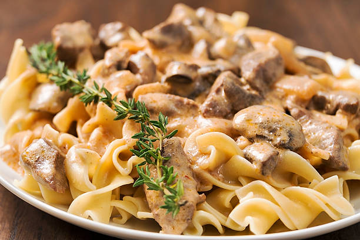

Stroganoff

Let’s do a straightforward, tasty beef stroganoff recipe that hits all the flavor notes without being fussy.
Tasty Beef Stroganoff Recipe (Serves 4)
Ingredients
- 500g (1 lb) beef sirloin or tenderloin, thinly sliced into strips
- 1 medium onion, diced
- 2 cloves garlic, minced
- 200g (7 oz) mushrooms, sliced
- 2 tbsp butter or oil
- 1 cup (240ml) heavy cream or sour cream
- 1 tbsp Dijon mustard
- 1 tbsp tomato paste (optional, adds richness)
- 1 tsp paprika
- Salt and pepper to taste
- Fresh parsley, chopped, for garnish
- Cooked rice or egg noodles, for serving
Instructions:
- Slice beef into thin strips and season with salt, pepper, and paprika.
- Heat butter or oil in a large skillet over medium-high heat.
- Sear beef quickly until browned but not fully cooked, then remove from skillet and set aside.
- Sauté onion and garlic until soft and fragrant.
- Add mushrooms and cook until they release their moisture and start to brown.
- Stir in tomato paste and Dijon mustard, mixing well.
- Return beef to the pan and pour in heavy cream or sour cream.
- Simmer gently 5-7 minutes until sauce thickens and beef is cooked through. Taste and adjust seasoning.
- Garnish with fresh parsley and serve over rice or egg noodles.
Now just put in a plate and eat it!
Go back